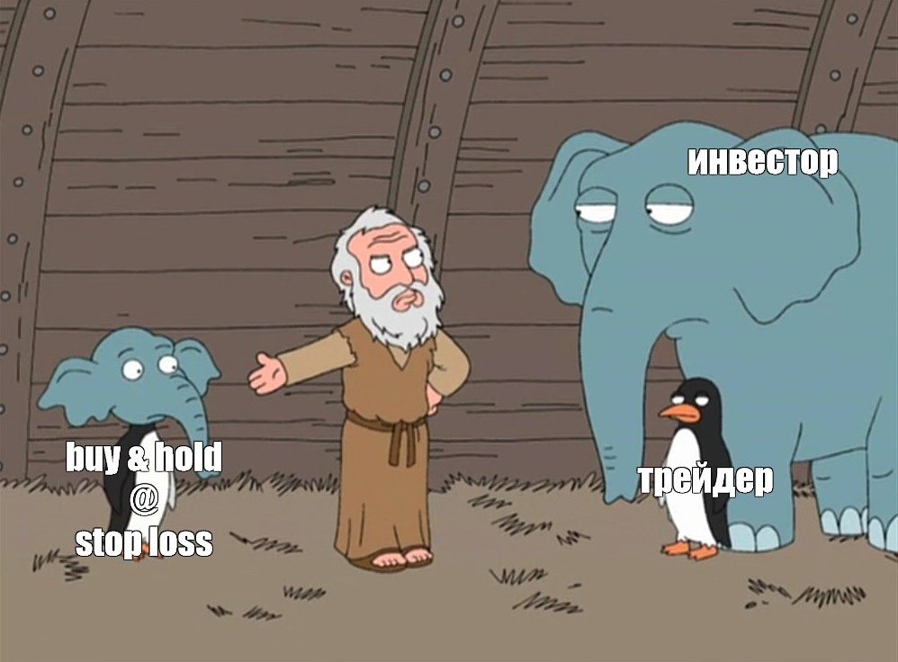

Инвесторы и трейдеры

Инвесторы, в отличие от трейдеров, играют «вдолгую»: покупают разные ценные бумаги, поддерживают необходимый уровень диверсификации и ждут, когда через много лет их капитал станет достаточно большим, а трейдер — инвестор, который получает прибыль на колебаниях цены актива, совершая краткосрочные сделки.
Понятие
Трейдер - торговец, действующий по собственной инициативе и стремящийся извлечь прибыль непосредственно из процесса торговли. Обычно подразумевается торговля ценными бумагами (акциями, облигациями, фьючерсами, опционами) на фондовой бирже.
Инвестор - лицо или организация (в том числе коммерческая компания, государство и т. д.), размещающие капитал с целью последующего получения прибыли (осуществляет инвестиции). Размещаемый инвестором капитал может быть как его собственный, так и заёмный. Если тот или иной проект окажется убыточным, капитал будет утрачен полностью или частично.
Самым богатым инвестором является - Уоррен Баффет. Один из крупнейших и наиболее известных в мире инвесторов, состояние которого на сентябрь 2018 года оценивалось в 108,4 млрд долларов, а на 12 февраля 2019 года — в 84,9 млрд долларов, что делало его четвёртым самым богатым человеком в мире.
Крупнейшие сделки в истории бирж
Первое место конечно же занимает Джордж Сорос, который в 1992 году поставил Банк Англии на колени и в процессе присвоил себе больше миллиарда долларов. Заключив изящную, продуманную сделку против британской валюты, он заработал целое состояние и в один день разрушил денежную систему Великобритании. Это единственный человек в истории, который заработал с одной сделки больше $1 млрд. Кстати, он внук самого первого миллиардера в истории "Джона Дэвисона Рокфееллера" - с учётом инфляции The New York Times оценивает его богатство около $305 млрд. в эквиваленте 2006 года, или $423 млрд. в эквиваленте 2021 года.
Кто знает, а может и вы попадёте в этот список. Надо просто верить в себя и двигаться в правильном направлении.